| Strategy | Runs | Resilience Score | Std Dev | Range | Pass Rate | Mean Recovery (ms) | Median Recovery (ms) | P95 Recovery (ms) |
|---|---|---|---|---|---|---|---|---|
| adversarial | 3 | 75.0 | ±9.2 | 75–91 | 0% | n/a | n/a | n/a |
| baseline | 3 | 100.0 | ±0.0 | 100–100 | 100% | n/a | n/a | n/a |
| best-fit | 3 | 100.0 | ±0.0 | 100–100 | 100% | n/a | n/a | n/a |
| colocate | 3 | 94.3 | ±9.8 | 83–100 | 67% | n/a | n/a | n/a |
| default | 3 | 94.3 | ±9.8 | 83–100 | 67% | n/a | n/a | n/a |
| dependency-aware | 3 | 75.0 | ±4.6 | 75–83 | 0% | n/a | n/a | n/a |
| random | 3 | 80.0 | ±12.8 | 66–91 | 0% | n/a | n/a | n/a |
| spread | 3 | 83.0 | ±4.6 | 75–83 | 0% | n/a | n/a | n/a |
Note: Resilience scores blend LitmusChaos probe verdicts (25%) with continuous metrics: recovery speed (25%), latency preservation (25%), error rate (15%), and throughput preservation (10%). This produces finer-grained differentiation than probe verdicts alone.
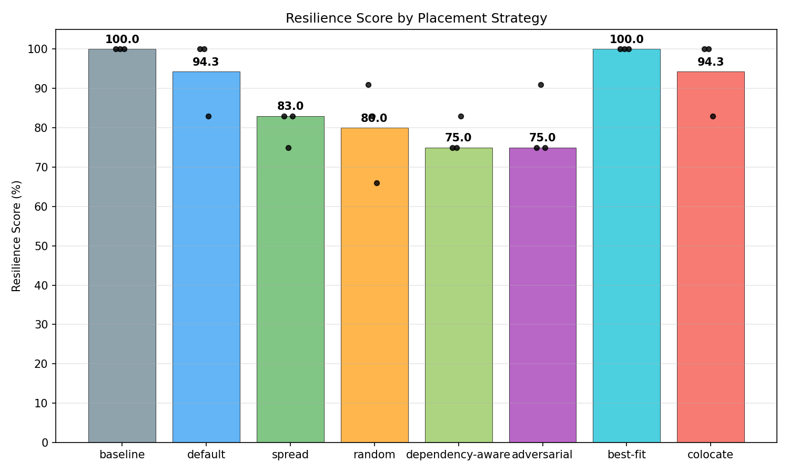
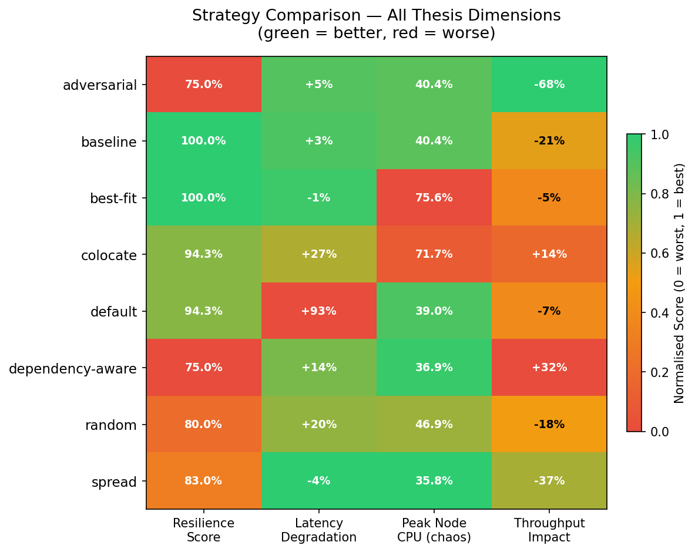
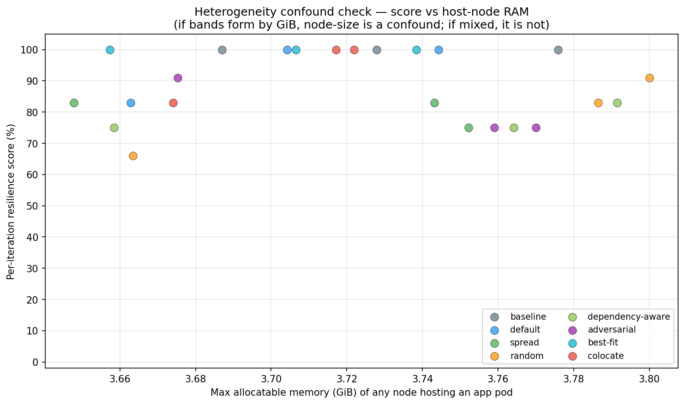
| Strategy | Iter 1 | Iter 2 | Iter 3 |
|---|---|---|---|
| adversarial | 75 ⚠ 341.7s | 91 ⚠ 340.0s | 75 336.6s |
| baseline | 100 219.2s | 100 219.9s | 100 218.6s |
| best-fit | 100 336.5s | 100 ⚠ 336.7s | 100 336.6s |
| colocate | 100 336.2s | 100 336.5s | 83 336.6s |
| default | 100 338.9s | 100 338.8s | 83 335.4s |
| dependency-aware | 75 338.5s | 75 ⚠ 339.7s | 83 ⚠ 341.4s |
| random | 91 ⚠ 338.1s | 83 ⚠ 339.4s | 66 ⚠ 339.6s |
| spread | 83 ⚠ 336.9s | 75 ⚠ 335.8s | 83 337.6s |
Each cell shows resilience score and iteration duration. Cells: ≥80 50–79 <50 ⚠ = pre-chaos baseline was degraded (score may reflect accumulated damage, not strategy resilience).
Pod-to-node assignments per strategy. Color groups pods on the same node.
| Deployment | adversarial | best-fit | colocate | dependency-aware | random | spread |
|---|---|---|---|---|---|---|
| adservice | worker1 | worker2 | worker1 | worker1 | worker1 | worker1 |
| cartservice | worker1 | worker2 | worker1 | worker1 | worker1 | worker2 |
| checkoutservice | worker1 | worker2 | worker1 | worker2 | worker3 | worker3 |
| currencyservice | worker4 | worker2 | worker1 | worker2 | worker2 | worker4 |
| emailservice | worker2 | worker2 | worker1 | worker4 | worker2 | worker1 |
| frontend | worker3 | worker2 | worker1 | worker1 | worker2 | worker2 |
| paymentservice | worker4 | worker2 | worker1 | worker4 | worker1 | worker3 |
| productcatalogservice | worker2 | worker2 | worker1 | worker2 | worker1 | worker4 |
| recommendationservice | worker1 | worker2 | worker1 | worker3 | worker4 | worker1 |
| redis-cart | worker1 | worker2 | worker1 | worker3 | worker1 | worker2 |
| shippingservice | worker3 | worker2 | worker1 | worker3 | worker1 | worker3 |
Time from pod deletion to pod ready, measured via the Kubernetes Watch API. Lower recovery time indicates better fault tolerance under the given placement.
HTTP route latency measured via kubectl exec using python3/wget probes.
Degradation from pre-chaos to during-chaos quantifies fault impact on service communication.
| Strategy | Route | Pre-Chaos Mean (ms) | During Chaos Mean (ms) | During Chaos P95 (ms) | During Chaos Cross-Pod Stddev (ms) | Worst Vantage Point (ms) | Post-Chaos Mean (ms) | Errors During Chaos |
|---|---|---|---|---|---|---|---|---|
| adversarial | / | 917.1 | 1816.0 +98% | 3101.9 | 438.5 | 4779.3 | 1115.1 | 0 |
| adversarial | /_healthz | 247.3 | 287.5 | 871.6 | 182.8 | 1781.4 | 241.7 | 0 |
| adversarial | /cart | 871.4 | 1025.6 | 1774.5 | 277.5 | 3287.8 | 769.9 | 0 |
| adversarial | /product/OLJCESPC7Z | 933.5 | 1304.4 | 3016.1 | 149.0 | 3393.6 | 663.2 | 0 |
| adversarial | cartservice->redis-cart | 13.0 | 15.1 | 50.7 | 18.1 | 101.3 | 32.2 | 0 |
| adversarial | checkoutservice->cartservice,frontend->cartservice | 23.3 | 22.9 | 45.3 | 23.2 | 93.3 | 15.7 | 0 |
| adversarial | checkoutservice->currencyservice,frontend->currencyservice | 12.9 | 19.7 +53% | 84.6 | 18.3 | 182.4 | 33.2 | 0 |
| adversarial | checkoutservice->emailservice | 26.9 | 16.4 | 44.6 | 18.9 | 99.8 | 33.6 | 0 |
| adversarial | checkoutservice->paymentservice | 49.3 | 26.5 | 50.3 | 31.4 | 107.0 | 23.9 | 0 |
| adversarial | checkoutservice->productcatalogservice,frontend->productcatalogservice,recommendationservice->productcatalogservice | 28.3 | 22.8 | 52.1 | 28.0 | 108.8 | 25.3 | 0 |
| adversarial | checkoutservice->shippingservice,frontend->shippingservice | 22.6 | 13.0 | 45.0 | 13.6 | 88.0 | 33.9 | 0 |
| adversarial | frontend->adservice | 12.3 | 13.4 | 44.4 | 14.8 | 86.7 | 34.9 | 0 |
| adversarial | frontend->checkoutservice | 19.5 | 14.2 | 43.7 | 15.9 | 87.5 | 14.8 | 0 |
| adversarial | frontend->recommendationservice | 27.7 | 12.2 | 43.8 | 8.9 | 85.1 | 13.2 | 0 |
| adversarial | loadgenerator->frontend | 13.7 | 21.2 +55% | 77.8 | 15.6 | 90.3 | 31.9 | 0 |
| baseline | / | 477.2 | 424.3 | 907.4 | 117.2 | 1707.1 | 395.0 | 0 |
| baseline | /_healthz | 140.2 | 128.2 | 183.3 | 46.1 | 317.4 | 128.5 | 0 |
| baseline | /cart | 321.8 | 351.0 | 692.0 | 111.9 | 999.1 | 267.1 | 0 |
| baseline | /product/OLJCESPC7Z | 434.7 | 347.1 | 610.7 | 70.1 | 904.0 | 402.8 | 0 |
| baseline | cartservice->redis-cart | 14.9 | 11.8 | 43.1 | 13.1 | 86.8 | 6.5 | 0 |
| baseline | checkoutservice->cartservice,frontend->cartservice | 12.7 | 11.3 | 52.2 | 6.9 | 83.1 | 18.0 | 0 |
| baseline | checkoutservice->currencyservice,frontend->currencyservice | 20.9 | 11.4 | 46.0 | 13.4 | 94.9 | 16.8 | 0 |
| baseline | checkoutservice->emailservice | 14.1 | 9.7 | 41.2 | 10.8 | 81.6 | 10.6 | 0 |
| baseline | checkoutservice->paymentservice | 27.1 | 13.9 | 45.1 | 15.5 | 106.4 | 13.9 | 0 |
| baseline | checkoutservice->productcatalogservice,frontend->productcatalogservice,recommendationservice->productcatalogservice | 12.8 | 17.9 | 44.6 | 18.6 | 87.4 | 11.9 | 0 |
| baseline | checkoutservice->shippingservice,frontend->shippingservice | 15.8 | 15.0 | 47.0 | 14.5 | 92.4 | 22.8 | 0 |
| baseline | frontend->adservice | 10.3 | 12.2 | 42.3 | 10.7 | 84.3 | 12.6 | 0 |
| baseline | frontend->checkoutservice | 9.0 | 11.1 | 41.4 | 11.9 | 85.7 | 8.9 | 0 |
| baseline | frontend->recommendationservice | 12.2 | 12.9 | 43.8 | 11.2 | 87.2 | 11.8 | 0 |
| baseline | loadgenerator->frontend | 2.5 | 6.4 +156% | 41.5 | 6.8 | 86.9 | 6.6 | 0 |
| best-fit | / | 896.8 | 1288.0 | 2600.4 | 289.0 | 3902.9 | 785.2 | 0 |
| best-fit | /_healthz | 192.3 | 262.7 | 679.1 | 109.0 | 1374.4 | 162.9 | 0 |
| best-fit | /cart | 424.2 | 809.7 +91% | 1783.3 | 171.3 | 1993.7 | 652.0 | 0 |
| best-fit | /product/OLJCESPC7Z | 613.6 | 853.8 | 1734.7 | 120.5 | 2595.2 | 551.7 | 0 |
| best-fit | cartservice->redis-cart | 10.2 | 10.3 | 31.9 | 8.3 | 65.3 | 6.7 | 0 |
| best-fit | checkoutservice->cartservice,frontend->cartservice | 13.2 | 15.8 | 43.8 | 16.3 | 99.5 | 11.0 | 0 |
| best-fit | checkoutservice->currencyservice,frontend->currencyservice | 10.6 | 10.3 | 37.4 | 9.0 | 93.3 | 19.0 | 0 |
| best-fit | checkoutservice->emailservice | 16.4 | 9.7 | 32.3 | 8.3 | 75.0 | 12.7 | 0 |
| best-fit | checkoutservice->paymentservice | 13.5 | 10.3 | 30.8 | 10.1 | 66.7 | 17.6 | 0 |
| best-fit | checkoutservice->productcatalogservice,frontend->productcatalogservice,recommendationservice->productcatalogservice | 13.7 | 10.6 | 28.3 | 7.6 | 57.4 | 8.8 | 0 |
| best-fit | checkoutservice->shippingservice,frontend->shippingservice | 17.4 | 7.9 | 22.4 | 5.6 | 60.7 | 19.2 | 0 |
| best-fit | frontend->adservice | 12.5 | 8.6 | 18.6 | 4.9 | 76.9 | 7.6 | 0 |
| best-fit | frontend->checkoutservice | 13.2 | 10.4 | 37.1 | 9.7 | 81.7 | 15.1 | 0 |
| best-fit | frontend->recommendationservice | 11.3 | 10.2 | 31.6 | 9.4 | 60.3 | 5.1 | 0 |
| best-fit | loadgenerator->frontend | 10.5 | 7.1 | 26.9 | 6.0 | 72.2 | 25.4 | 0 |
| colocate | / | 216.7 | 420.7 +94% | 1207.4 | 74.5 | 1500.5 | 232.2 | 0 |
| colocate | /_healthz | 104.5 | 108.8 | 179.3 | 39.2 | 289.1 | 95.6 | 0 |
| colocate | /cart | 169.8 | 297.6 +75% | 555.6 | 78.1 | 981.9 | 185.6 | 0 |
| colocate | /product/OLJCESPC7Z | 299.9 | 368.9 | 966.2 | 66.4 | 1587.5 | 422.2 | 0 |
| colocate | cartservice->redis-cart | 7.9 | 8.8 | 34.4 | 8.6 | 81.1 | 11.8 | 0 |
| colocate | checkoutservice->cartservice,frontend->cartservice | 6.1 | 10.4 +69% | 40.3 | 9.9 | 79.0 | 3.6 | 0 |
| colocate | checkoutservice->currencyservice,frontend->currencyservice | 4.7 | 8.3 +78% | 41.4 | 8.6 | 82.5 | 6.4 | 0 |
| colocate | checkoutservice->emailservice | 16.0 | 7.6 | 31.6 | 7.5 | 74.0 | 7.1 | 0 |
| colocate | checkoutservice->paymentservice | 3.3 | 8.3 +149% | 34.7 | 7.2 | 72.6 | 11.5 | 0 |
| colocate | checkoutservice->productcatalogservice,frontend->productcatalogservice,recommendationservice->productcatalogservice | 7.3 | 7.8 | 37.8 | 5.5 | 83.5 | 9.8 | 0 |
| colocate | checkoutservice->shippingservice,frontend->shippingservice | 9.5 | 11.8 | 36.0 | 10.9 | 84.6 | 8.9 | 0 |
| colocate | frontend->adservice | 9.4 | 9.3 | 36.6 | 9.5 | 81.6 | 8.8 | 0 |
| colocate | frontend->checkoutservice | 8.8 | 6.8 | 30.3 | 6.8 | 77.8 | 2.3 | 0 |
| colocate | frontend->recommendationservice | 9.5 | 10.3 | 42.3 | 10.2 | 83.1 | 9.4 | 0 |
| colocate | loadgenerator->frontend | 17.6 | 8.3 | 45.0 | 5.7 | 78.9 | 5.3 | 0 |
| default | / | 384.7 | 747.2 +94% | 1953.6 | 86.0 | 2969.8 | 389.5 | 0 |
| default | /_healthz | 139.8 | 149.7 | 218.1 | 40.2 | 556.1 | 146.4 | 0 |
| default | /cart | 300.2 | 512.9 +71% | 1409.2 | 85.5 | 1747.9 | 279.3 | 0 |
| default | /product/OLJCESPC7Z | 275.2 | 522.8 +90% | 1197.3 | 71.2 | 1565.0 | 298.1 | 0 |
| default | cartservice->redis-cart | 10.5 | 16.9 +61% | 43.1 | 20.8 | 88.1 | 2.1 | 0 |
| default | checkoutservice->cartservice,frontend->cartservice | 8.7 | 15.8 +81% | 49.6 | 13.6 | 90.2 | 5.9 | 0 |
| default | checkoutservice->currencyservice,frontend->currencyservice | 14.2 | 11.2 | 44.2 | 13.3 | 87.8 | 11.9 | 0 |
| default | checkoutservice->emailservice | 14.8 | 17.1 | 43.0 | 19.8 | 92.3 | 15.5 | 0 |
| default | checkoutservice->paymentservice | 2.3 | 11.1 +372% | 43.6 | 13.1 | 89.0 | 13.6 | 0 |
| default | checkoutservice->productcatalogservice,frontend->productcatalogservice,recommendationservice->productcatalogservice | 17.8 | 11.1 | 43.4 | 12.8 | 88.4 | 12.3 | 0 |
| default | checkoutservice->shippingservice,frontend->shippingservice | 11.8 | 15.6 | 53.3 | 14.4 | 99.6 | 9.0 | 0 |
| default | frontend->adservice | 2.2 | 13.1 +501% | 42.5 | 16.2 | 86.0 | 21.7 | 0 |
| default | frontend->checkoutservice | 14.2 | 12.4 | 50.2 | 8.8 | 87.4 | 24.7 | 0 |
| default | frontend->recommendationservice | 5.6 | 13.4 +138% | 43.1 | 16.5 | 88.9 | 15.5 | 0 |
| default | loadgenerator->frontend | 13.8 | 13.9 | 42.5 | 17.6 | 86.4 | 15.1 | 0 |
| dependency-aware | / | 1385.9 | 2051.7 | 3592.2 | 365.0 | 5016.1 | 1058.6 | 0 |
| dependency-aware | /_healthz | 228.7 | 295.7 | 663.5 | 135.4 | 1182.6 | 158.8 | 0 |
| dependency-aware | /cart | 730.6 | 1192.9 +63% | 2285.2 | 243.4 | 3308.5 | 554.9 | 0 |
| dependency-aware | /product/OLJCESPC7Z | 966.2 | 1453.3 +50% | 3021.6 | 191.6 | 3591.1 | 648.5 | 0 |
| dependency-aware | cartservice->redis-cart | 23.6 | 8.4 | 40.0 | 4.0 | 86.8 | 3.5 | 0 |
| dependency-aware | checkoutservice->cartservice,frontend->cartservice | 11.6 | 11.5 | 44.3 | 6.7 | 87.5 | 21.7 | 0 |
| dependency-aware | checkoutservice->currencyservice,frontend->currencyservice | 18.4 | 13.8 | 46.2 | 14.6 | 91.7 | 14.9 | 0 |
| dependency-aware | checkoutservice->emailservice | 11.5 | 17.5 +51% | 45.6 | 15.8 | 88.9 | 20.8 | 0 |
| dependency-aware | checkoutservice->paymentservice | 18.6 | 19.3 | 48.0 | 22.1 | 94.7 | 15.1 | 0 |
| dependency-aware | checkoutservice->productcatalogservice,frontend->productcatalogservice,recommendationservice->productcatalogservice | 37.3 | 20.0 | 45.5 | 17.6 | 87.6 | 8.8 | 0 |
| dependency-aware | checkoutservice->shippingservice,frontend->shippingservice | 11.2 | 12.5 | 43.9 | 13.5 | 85.3 | 25.8 | 0 |
| dependency-aware | frontend->adservice | 11.2 | 27.7 +147% | 82.0 | 23.9 | 94.9 | 15.5 | 0 |
| dependency-aware | frontend->checkoutservice | 30.2 | 14.1 | 50.5 | 13.9 | 98.1 | 15.4 | 0 |
| dependency-aware | frontend->recommendationservice | 18.5 | 17.8 | 47.1 | 15.7 | 88.9 | 9.5 | 0 |
| dependency-aware | loadgenerator->frontend | 18.3 | 18.9 | 44.7 | 18.3 | 87.9 | 20.1 | 0 |
| random | / | 1450.8 | 2048.4 | 4207.4 | 380.8 | 5092.5 | 1260.0 | 0 |
| random | /_healthz | 194.6 | 272.1 | 458.4 | 124.4 | 707.3 | 218.9 | 0 |
| random | /cart | 665.0 | 1253.1 +88% | 2004.7 | 307.4 | 2786.5 | 724.3 | 0 |
| random | /product/OLJCESPC7Z | 825.9 | 1327.2 +61% | 2288.7 | 267.6 | 3691.4 | 967.5 | 0 |
| random | cartservice->redis-cart | 27.6 | 14.9 | 47.7 | 14.5 | 96.5 | 25.2 | 0 |
| random | checkoutservice->cartservice,frontend->cartservice | 12.1 | 10.3 | 42.8 | 8.9 | 82.8 | 14.0 | 0 |
| random | checkoutservice->currencyservice,frontend->currencyservice | 16.0 | 22.0 | 48.4 | 23.5 | 102.5 | 15.3 | 0 |
| random | checkoutservice->emailservice | 33.3 | 9.7 | 39.8 | 8.4 | 78.0 | 16.9 | 0 |
| random | checkoutservice->paymentservice | 8.8 | 15.1 +72% | 48.8 | 9.2 | 90.5 | 6.5 | 0 |
| random | checkoutservice->productcatalogservice,frontend->productcatalogservice,recommendationservice->productcatalogservice | 16.5 | 18.1 | 58.7 | 13.6 | 111.9 | 17.4 | 0 |
| random | checkoutservice->shippingservice,frontend->shippingservice | 14.6 | 16.1 | 44.6 | 17.9 | 85.8 | 23.4 | 0 |
| random | frontend->adservice | 13.8 | 16.8 | 50.4 | 13.9 | 94.8 | 25.4 | 0 |
| random | frontend->checkoutservice | 16.2 | 22.4 | 47.3 | 20.0 | 87.1 | 16.9 | 0 |
| random | frontend->recommendationservice | 23.6 | 17.2 | 46.0 | 18.6 | 88.6 | 12.8 | 0 |
| random | loadgenerator->frontend | 14.0 | 19.8 | 44.3 | 23.9 | 87.3 | 32.1 | 0 |
| spread | / | 1376.8 | 1575.3 | 3722.4 | 272.7 | 4474.0 | 1040.5 | 0 |
| spread | /_healthz | 241.6 | 216.1 | 363.1 | 87.2 | 762.7 | 191.5 | 0 |
| spread | /cart | 727.7 | 950.8 | 1988.9 | 183.6 | 3552.2 | 620.7 | 0 |
| spread | /product/OLJCESPC7Z | 773.2 | 1163.7 +51% | 3182.8 | 96.6 | 3461.9 | 928.7 | 0 |
| spread | cartservice->redis-cart | 29.8 | 19.2 | 66.1 | 15.6 | 92.3 | 12.5 | 0 |
| spread | checkoutservice->cartservice,frontend->cartservice | 16.5 | 18.8 | 48.2 | 19.1 | 91.4 | 18.3 | 0 |
| spread | checkoutservice->currencyservice,frontend->currencyservice | 37.5 | 14.1 | 49.9 | 16.4 | 97.2 | 20.0 | 0 |
| spread | checkoutservice->emailservice | 21.3 | 10.7 | 44.2 | 12.4 | 84.9 | 28.1 | 0 |
| spread | checkoutservice->paymentservice | 16.1 | 17.5 | 64.3 | 14.7 | 88.7 | 12.2 | 0 |
| spread | checkoutservice->productcatalogservice,frontend->productcatalogservice,recommendationservice->productcatalogservice | 34.8 | 12.4 | 61.5 | 7.7 | 89.9 | 28.0 | 0 |
| spread | checkoutservice->shippingservice,frontend->shippingservice | 11.7 | 10.8 | 41.3 | 12.2 | 85.8 | 2.8 | 0 |
| spread | frontend->adservice | 3.5 | 9.1 +158% | 43.3 | 10.5 | 89.1 | 11.7 | 0 |
| spread | frontend->checkoutservice | 16.7 | 14.9 | 45.0 | 14.0 | 86.8 | 20.9 | 0 |
| spread | frontend->recommendationservice | 23.3 | 12.6 | 44.5 | 15.4 | 85.2 | 18.1 | 0 |
| spread | loadgenerator->frontend | 29.7 | 13.2 | 44.1 | 15.2 | 87.3 | 20.9 | 0 |
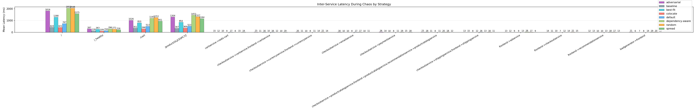
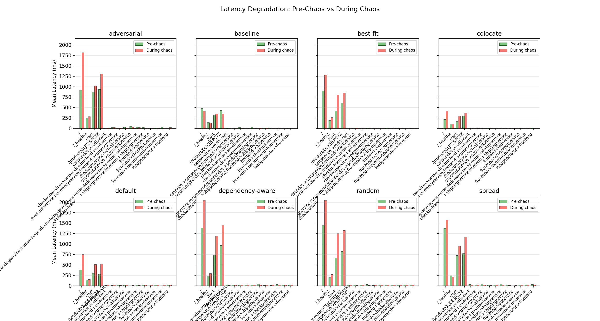
Node-level CPU and memory utilization from the Kubernetes Metrics API. Only nodes hosting namespace pods are included — idle nodes are excluded so placement strategies produce distinct resource profiles. Higher utilization during chaos correlates with resource contention from co-location.
| Strategy | Phase | Mean CPU (%) | CPU Stddev (%) | Peak Node CPU (%) | Mean Memory (%) | Mem Stddev (%) | Peak Node Mem (%) | Samples |
|---|---|---|---|---|---|---|---|---|
| adversarial (4 used) | pre-chaos | 24.2 | 4.5 | 40.4 | 66.5 | 0.2 | 71.4 | 14 |
| adversarial (4 used) | during-chaos | 20.8 | 2.7 | 40.4 | 67.3 | 0.2 | 72.7 | 64 |
| adversarial (4 used) | post-chaos | 20.4 | 0.9 | 29.6 | 66.8 | 0.1 | 71.2 | 12 |
| baseline (4 used) | pre-chaos | 18.7 | 3.1 | 39.3 | 65.5 | 0.0 | 70.2 | 13 |
| baseline (4 used) | during-chaos | 20.1 | 1.1 | 40.4 | 66.0 | 0.3 | 71.4 | 44 |
| baseline (4 used) | post-chaos | 18.4 | 0.5 | 34.1 | 65.6 | 0.1 | 70.7 | 12 |
| best-fit (4 used) | pre-chaos | 19.9 | 3.6 | 74.2 | 65.4 | 0.2 | 70.5 | 14 |
| best-fit (4 used) | during-chaos | 21.6 | 2.0 | 75.6 | 65.9 | 0.2 | 71.0 | 64 |
| best-fit (4 used) | post-chaos | 21.5 | 0.7 | 67.9 | 65.4 | 0.1 | 70.1 | 12 |
| colocate (4 used) | pre-chaos | 18.5 | 2.7 | 71.2 | 65.2 | 0.1 | 70.4 | 13 |
| colocate (4 used) | during-chaos | 19.8 | 1.7 | 71.7 | 65.8 | 0.2 | 71.4 | 64 |
| colocate (4 used) | post-chaos | 22.5 | 2.7 | 69.3 | 65.5 | 0.0 | 70.6 | 12 |
| default (4 used) | pre-chaos | 17.6 | 3.4 | 31.2 | 65.6 | 0.2 | 72.0 | 13 |
| default (4 used) | during-chaos | 18.9 | 3.0 | 39.0 | 66.4 | 0.2 | 73.1 | 66 |
| default (4 used) | post-chaos | 19.3 | 0.8 | 29.3 | 66.1 | 0.1 | 72.3 | 12 |
| dependency-aware (4 used) | pre-chaos | 20.0 | 3.6 | 38.1 | 66.4 | 0.3 | 72.0 | 13 |
| dependency-aware (4 used) | during-chaos | 21.8 | 2.7 | 36.9 | 67.3 | 0.2 | 72.8 | 66 |
| dependency-aware (4 used) | post-chaos | 21.9 | 0.8 | 30.8 | 66.9 | 0.1 | 71.8 | 12 |
| random (4 used) | pre-chaos | 21.2 | 3.4 | 42.1 | 65.9 | 0.2 | 72.2 | 13 |
| random (4 used) | during-chaos | 22.0 | 2.6 | 46.9 | 66.7 | 0.2 | 72.8 | 66 |
| random (4 used) | post-chaos | 23.1 | 1.3 | 39.7 | 66.6 | 0.1 | 72.2 | 12 |
| spread (4 used) | pre-chaos | 20.7 | 3.7 | 37.8 | 65.6 | 0.2 | 71.2 | 14 |
| spread (4 used) | during-chaos | 22.0 | 2.8 | 35.8 | 66.6 | 0.3 | 72.5 | 65 |
| spread (4 used) | post-chaos | 22.7 | 1.1 | 32.4 | 66.2 | 0.1 | 71.4 | 12 |
Note: Metrics are computed only for nodes that host at least one namespace pod. Idle nodes are excluded so placement strategies (colocate vs spread) produce visibly different resource profiles.
| Strategy | Worker Node | Mean CPU (%) | Max CPU (%) | Mean Memory (%) |
|---|---|---|---|---|
| adversarial | worker1 | 25.8 | 40.4 | 64.3 |
| adversarial | worker2 | 16.8 | 25.3 | 66.0 |
| adversarial | worker3 | 24.2 | 32.9 | 66.6 |
| adversarial | worker4 | 16.3 | 23.7 | 72.2 |
| baseline | worker1 | 26.8 | 29.6 | 59.5 |
| baseline | worker2 | 9.3 | 10.9 | 65.1 |
| baseline | worker3 | 36.6 | 40.4 | 68.3 |
| baseline | worker4 | 7.8 | 14.4 | 70.9 |
| best-fit | worker1 | 7.6 | 11.6 | 58.7 |
| best-fit | worker2 | 64.2 | 75.6 | 69.8 |
| best-fit | worker3 | 6.6 | 11.9 | 64.4 |
| best-fit | worker4 | 8.0 | 9.7 | 70.7 |
| colocate | worker1 | 63.4 | 71.7 | 66.1 |
| colocate | worker2 | 5.3 | 7.9 | 60.4 |
| colocate | worker3 | 4.8 | 10.6 | 66.0 |
| colocate | worker4 | 5.7 | 7.6 | 70.9 |
| default | worker1 | 10.9 | 21.5 | 59.2 |
| default | worker2 | 16.0 | 25.9 | 65.8 |
| default | worker3 | 27.1 | 39.0 | 67.9 |
| default | worker4 | 21.6 | 28.9 | 72.7 |
| dependency-aware | worker1 | 29.4 | 36.9 | 63.6 |
| dependency-aware | worker2 | 19.4 | 25.0 | 65.8 |
| dependency-aware | worker3 | 22.7 | 28.6 | 67.2 |
| dependency-aware | worker4 | 15.8 | 22.5 | 72.5 |
| random | worker1 | 38.2 | 46.9 | 63.6 |
| random | worker2 | 9.8 | 15.8 | 63.8 |
| random | worker3 | 18.2 | 22.6 | 67.1 |
| random | worker4 | 21.8 | 29.2 | 72.3 |
| spread | worker1 | 29.1 | 35.8 | 62.6 |
| spread | worker2 | 28.3 | 33.4 | 66.8 |
| spread | worker3 | 11.0 | 18.2 | 65.1 |
| spread | worker4 | 19.5 | 27.5 | 72.0 |
Key insight: Under colocate, one worker absorbs all application CPU while others remain idle. The cluster-wide mean hides this hot-node effect. Under spread, load distributes more evenly across workers.
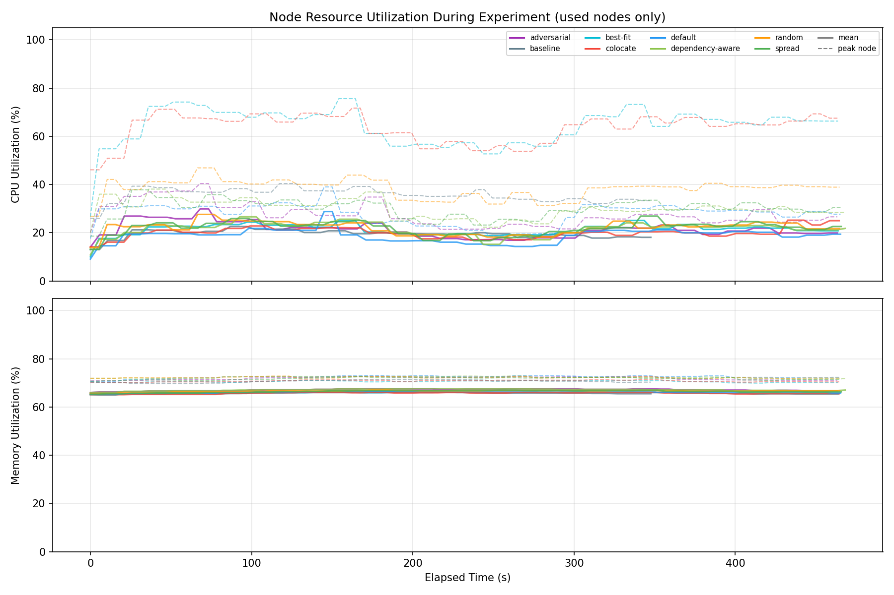
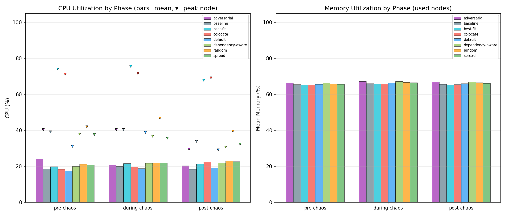
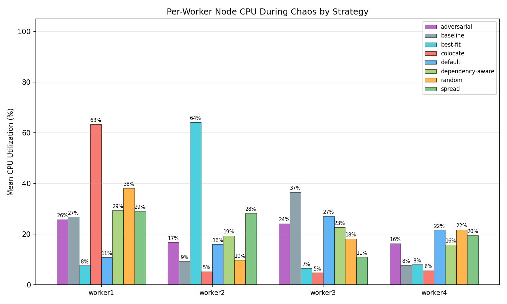
Redis ops/s and sequential disk read/write bandwidth measured via
redis-cli and dd. Throughput degradation during chaos
reflects shared I/O contention on co-located nodes.
| Strategy | Operation | Pre-Chaos Ops/s | During Chaos Ops/s | During Chaos Latency (ms) | During Chaos Bandwidth | During Chaos Cross-Node Stddev (ops/s) | Worst Node Min (ops/s) | Post-Chaos Ops/s |
|---|---|---|---|---|---|---|---|---|
| adversarial | redis-read | 2067.9 | 5208.4 | 2.84 | n/a | n/a | n/a | 7683.5 |
| adversarial | redis-write | 2088.6 | 4042.3 | 3.31 | n/a | n/a | n/a | 5617.1 |
| adversarial | disk-read | 21068.2 | 21669.3 | 0.08 | 1354.3 MB/s | 0.0 | 1646.8 | 18825.1 |
| adversarial | disk-write | 492.0 | 600.6 | 1.76 | 37.5 MB/s | 0.0 | 338.9 | 677.3 |
| baseline | redis-read | 11412.5 | 20840.0 | 0.57 | n/a | n/a | n/a | 23298.8 |
| baseline | redis-write | 36694.3 | 37499.5 | 0.66 | n/a | n/a | n/a | 23695.1 |
| baseline | disk-read | 24369.1 | 24259.3 | 0.05 | 1516.2 MB/s | 0.0 | 8045.6 | 27728.8 |
| baseline | disk-write | 740.5 | 745.1 | 1.45 | 46.6 MB/s | 0.0 | 274.7 | 756.8 |
| best-fit | redis-read | 2031.1 | 3000.3 | 6.30 | n/a | n/a | n/a | 2799.6 |
| best-fit | redis-write | 5052.8 | 4597.9 | 6.75 | n/a | n/a | n/a | 3870.0 |
| best-fit | disk-read | 20718.5 | 17682.9 | 0.27 | 1105.2 MB/s | 6939.0 | 127.2 | 16368.4 |
| best-fit | disk-write | 583.2 | 561.4 | 1.95 | 35.1 MB/s | 70.1 | 98.0 | 580.2 |
| colocate | redis-read | 6946.5 | 6094.5 | 3.48 | n/a | n/a | n/a | 7895.1 |
| colocate | redis-write | 12974.1 | 8749.9 -33% | 3.06 | n/a | n/a | n/a | 3508.3 |
| colocate | disk-read | 26817.9 | 22471.4 | 0.06 | 1404.5 MB/s | 9282.7 | 4157.9 | 22528.7 |
| colocate | disk-write | 642.5 | 663.4 | 1.61 | 41.5 MB/s | 112.3 | 221.9 | 709.9 |
| default | redis-read | 14301.0 | 10672.8 | 0.81 | n/a | n/a | n/a | 15343.0 |
| default | redis-write | 13742.1 | 18767.5 | 0.83 | n/a | n/a | n/a | 17073.2 |
| default | disk-read | 23252.2 | 25256.4 | 0.05 | 1578.5 MB/s | 0.0 | 5700.6 | 23229.9 |
| default | disk-write | 706.0 | 763.0 | 1.40 | 47.7 MB/s | 0.0 | 344.6 | 796.0 |
| dependency-aware | redis-read | 18259.4 | 3994.6 -78% | 1.84 | n/a | n/a | n/a | 2172.3 |
| dependency-aware | redis-write | 12759.6 | 7409.6 -42% | 1.79 | n/a | n/a | n/a | 1984.4 |
| dependency-aware | disk-read | 15928.5 | 15634.1 | 0.10 | 977.1 MB/s | 0.0 | 1826.6 | 24758.0 |
| dependency-aware | disk-write | 612.3 | 564.5 | 2.07 | 35.3 MB/s | 0.0 | 131.2 | 612.1 |
| random | redis-read | 12253.5 | 3003.0 -75% | 1.71 | n/a | n/a | n/a | 5104.2 |
| random | redis-write | 3314.2 | 7544.4 | 1.49 | n/a | n/a | n/a | 2160.7 |
| random | disk-read | 19187.9 | 16305.5 | 0.10 | 1019.1 MB/s | 6378.2 | 2732.2 | 17893.1 |
| random | disk-write | 423.5 | 565.8 | 1.88 | 35.4 MB/s | 101.1 | 222.1 | 534.1 |
| spread | redis-read | 2057.5 | 5811.7 | 4.27 | n/a | n/a | n/a | 1664.6 |
| spread | redis-write | 12916.5 | 6665.1 -48% | 4.20 | n/a | n/a | n/a | 2048.2 |
| spread | disk-read | 18838.7 | 19134.6 | 0.12 | 1195.9 MB/s | 7820.5 | 1067.6 | 24998.9 |
| spread | disk-write | 503.1 | 567.4 | 1.92 | 35.5 MB/s | 127.8 | 270.6 | 614.8 |
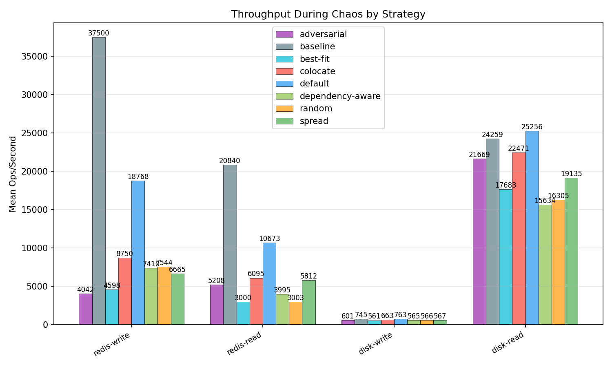
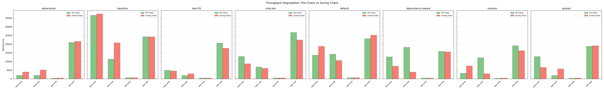
Pod readiness, CPU throttling, memory working set, and network receive bytes collected via PromQL. These metrics supplement the primary four dimensions.
| Strategy | Metric | Phase | Mean | Max | Samples |
|---|---|---|---|---|---|
| adversarial | apiserver_inflight | pre-chaos | 2.0000 | 2.0000 | 7 |
| adversarial | apiserver_inflight | during-chaos | 2.5484 | 4.0000 | 31 |
| adversarial | apiserver_inflight | post-chaos | 1.8333 | 2.0000 | 6 |
| adversarial | apiserver_request_p99 | pre-chaos | 1.6789 | 1.7700 | 7 |
| adversarial | apiserver_request_p99 | during-chaos | 2.2489 | 2.8034 | 31 |
| adversarial | apiserver_request_p99 | post-chaos | 2.6439 | 2.6786 | 6 |
| adversarial | conntrack_entries_per_node | pre-chaos | 8571.2857 | 9708.0000 | 7 |
| adversarial | conntrack_entries_per_node | during-chaos | 5648.2258 | 7703.0000 | 31 |
| adversarial | conntrack_entries_per_node | post-chaos | 5430.3333 | 5845.0000 | 6 |
| adversarial | container_oom_events_per_pod | pre-chaos | 0.0000 | 0.0000 | 7 |
| adversarial | container_oom_events_per_pod | during-chaos | 0.0000 | 0.0000 | 31 |
| adversarial | container_oom_events_per_pod | post-chaos | 0.0000 | 0.0000 | 6 |
| adversarial | coredns_cache_hit_rate_per_sec | pre-chaos | 146.6754 | 245.2889 | 7 |
| adversarial | coredns_cache_hit_rate_per_sec | during-chaos | 61.2588 | 81.0209 | 31 |
| adversarial | coredns_cache_hit_rate_per_sec | post-chaos | 62.5850 | 65.0681 | 6 |
| adversarial | coredns_cache_miss_rate_per_sec | pre-chaos | 6.3358 | 7.5107 | 7 |
| adversarial | coredns_cache_miss_rate_per_sec | during-chaos | 10.3579 | 13.0666 | 31 |
| adversarial | coredns_cache_miss_rate_per_sec | post-chaos | 7.6277 | 8.4445 | 6 |
| adversarial | coredns_request_count_per_sec | pre-chaos | 152.6953 | 252.2889 | 7 |
| adversarial | coredns_request_count_per_sec | during-chaos | 71.5106 | 93.2393 | 31 |
| adversarial | coredns_request_count_per_sec | post-chaos | 70.2294 | 72.8017 | 6 |
| adversarial | coredns_request_duration_p99 | pre-chaos | 0.0062 | 0.0066 | 7 |
| adversarial | coredns_request_duration_p99 | during-chaos | 0.0065 | 0.0071 | 31 |
| adversarial | coredns_request_duration_p99 | post-chaos | 0.0068 | 0.0070 | 6 |
| adversarial | cpu_throttling | pre-chaos | 2.8000 | 2.9067 | 7 |
| adversarial | cpu_throttling | during-chaos | 4.0893 | 5.0392 | 31 |
| adversarial | cpu_throttling | post-chaos | 4.8410 | 4.8711 | 6 |
| adversarial | cpu_usage | pre-chaos | 0.4996 | 0.5189 | 7 |
| adversarial | cpu_usage | during-chaos | 0.7134 | 0.8501 | 31 |
| adversarial | cpu_usage | post-chaos | 0.8019 | 0.8184 | 6 |
| adversarial | kubelet_pleg_relist_duration_p99 | pre-chaos | 0.1346 | 0.2211 | 7 |
| adversarial | kubelet_pleg_relist_duration_p99 | during-chaos | 0.1420 | 0.2307 | 31 |
| adversarial | kubelet_pleg_relist_duration_p99 | post-chaos | 0.0232 | 0.0233 | 6 |
| adversarial | kubelet_pod_start_p99 | pre-chaos | 4.7405 | 4.7667 | 7 |
| adversarial | kubelet_pod_start_p99 | during-chaos | 4.5747 | 4.7875 | 31 |
| adversarial | kubelet_pod_start_p99 | post-chaos | 4.3533 | 4.8000 | 6 |
| adversarial | kubelet_runtime_ops_p99 | pre-chaos | 21.6546 | 52.9204 | 7 |
| adversarial | kubelet_runtime_ops_p99 | during-chaos | 47.1816 | 55.9961 | 31 |
| adversarial | kubelet_runtime_ops_p99 | post-chaos | 53.5990 | 53.6175 | 6 |
| adversarial | memory_usage | pre-chaos | 823395474.2857 | 843137024.0000 | 7 |
| adversarial | memory_usage | during-chaos | 577078305.0323 | 886108160.0000 | 31 |
| adversarial | memory_usage | post-chaos | 502661120.0000 | 510529536.0000 | 6 |
| adversarial | network_packets | pre-chaos | 651.4426 | 674.0631 | 7 |
| adversarial | network_packets | during-chaos | 938.7320 | 1136.6068 | 31 |
| adversarial | network_packets | post-chaos | 1137.0184 | 1151.9139 | 6 |
| adversarial | network_receive_bytes | pre-chaos | 141959.6044 | 149353.3034 | 7 |
| adversarial | network_receive_bytes | during-chaos | 215040.2057 | 265734.9759 | 31 |
| adversarial | network_receive_bytes | post-chaos | 262486.4290 | 267366.6899 | 6 |
| adversarial | network_transmit_bytes | pre-chaos | 132604.8940 | 138567.2588 | 7 |
| adversarial | network_transmit_bytes | during-chaos | 201435.3296 | 250315.2056 | 31 |
| adversarial | network_transmit_bytes | post-chaos | 245146.3842 | 247836.8320 | 6 |
| adversarial | node_cpu_pressure_some_per_node | pre-chaos | 1.4724 | 1.4926 | 7 |
| adversarial | node_cpu_pressure_some_per_node | during-chaos | 1.9370 | 2.2468 | 31 |
| adversarial | node_cpu_pressure_some_per_node | post-chaos | 2.1537 | 2.1627 | 6 |
| adversarial | node_io_pressure_some_per_node | pre-chaos | 0.0354 | 0.0423 | 7 |
| adversarial | node_io_pressure_some_per_node | during-chaos | 0.0215 | 0.0243 | 31 |
| adversarial | node_io_pressure_some_per_node | post-chaos | 0.0209 | 0.0211 | 6 |
| adversarial | node_memory_pressure_some_per_node | pre-chaos | 0.0001 | 0.0001 | 7 |
| adversarial | node_memory_pressure_some_per_node | during-chaos | 0.0002 | 0.0003 | 31 |
| adversarial | node_memory_pressure_some_per_node | post-chaos | 0.0001 | 0.0001 | 6 |
| adversarial | pod_ready_count | pre-chaos | 14.0000 | 14.0000 | 7 |
| adversarial | pod_ready_count | during-chaos | 17.9677 | 20.0000 | 31 |
| adversarial | pod_ready_count | post-chaos | 14.0000 | 14.0000 | 6 |
| adversarial | tcp_retransmit_rate_per_node | pre-chaos | 0.9524 | 1.4667 | 7 |
| adversarial | tcp_retransmit_rate_per_node | during-chaos | 0.8627 | 1.4667 | 31 |
| adversarial | tcp_retransmit_rate_per_node | post-chaos | 0.8148 | 1.0000 | 6 |
| baseline | apiserver_inflight | pre-chaos | 2.4286 | 4.0000 | 7 |
| baseline | apiserver_inflight | during-chaos | 2.4762 | 5.0000 | 21 |
| baseline | apiserver_inflight | post-chaos | 2.0000 | 2.0000 | 6 |
| baseline | apiserver_request_p99 | pre-chaos | 0.9242 | 0.9350 | 7 |
| baseline | apiserver_request_p99 | during-chaos | 1.0720 | 1.1715 | 21 |
| baseline | apiserver_request_p99 | post-chaos | 1.1729 | 1.1854 | 6 |
| baseline | conntrack_entries_per_node | pre-chaos | 6753.4286 | 7969.0000 | 7 |
| baseline | conntrack_entries_per_node | during-chaos | 6413.6667 | 8856.0000 | 21 |
| baseline | conntrack_entries_per_node | post-chaos | 6262.1667 | 6802.0000 | 6 |
| baseline | container_oom_events_per_pod | pre-chaos | 0.0000 | 0.0000 | 7 |
| baseline | container_oom_events_per_pod | during-chaos | 0.0000 | 0.0000 | 21 |
| baseline | container_oom_events_per_pod | post-chaos | 0.0000 | 0.0000 | 6 |
| baseline | coredns_cache_hit_rate_per_sec | pre-chaos | 368.5460 | 610.1111 | 7 |
| baseline | coredns_cache_hit_rate_per_sec | during-chaos | 82.8868 | 98.0222 | 21 |
| baseline | coredns_cache_hit_rate_per_sec | post-chaos | 75.8258 | 77.4889 | 6 |
| baseline | coredns_cache_miss_rate_per_sec | pre-chaos | 7.7968 | 9.9333 | 7 |
| baseline | coredns_cache_miss_rate_per_sec | during-chaos | 12.2148 | 15.0889 | 21 |
| baseline | coredns_cache_miss_rate_per_sec | post-chaos | 10.7222 | 12.1556 | 6 |
| baseline | coredns_request_count_per_sec | pre-chaos | 376.3428 | 618.4444 | 7 |
| baseline | coredns_request_count_per_sec | during-chaos | 95.1016 | 112.4667 | 21 |
| baseline | coredns_request_count_per_sec | post-chaos | 86.5480 | 88.5111 | 6 |
| baseline | coredns_request_duration_p99 | pre-chaos | 0.0021 | 0.0023 | 7 |
| baseline | coredns_request_duration_p99 | during-chaos | 0.0025 | 0.0035 | 21 |
| baseline | coredns_request_duration_p99 | post-chaos | 0.0036 | 0.0037 | 6 |
| baseline | cpu_throttling | pre-chaos | 3.4073 | 3.5318 | 7 |
| baseline | cpu_throttling | during-chaos | 3.4441 | 4.3366 | 21 |
| baseline | cpu_throttling | post-chaos | 4.4898 | 4.5483 | 6 |
| baseline | cpu_usage | pre-chaos | 0.7069 | 0.7275 | 7 |
| baseline | cpu_usage | during-chaos | 0.7473 | 0.8987 | 21 |
| baseline | cpu_usage | post-chaos | 0.8941 | 0.9138 | 6 |
| baseline | kubelet_pleg_relist_duration_p99 | pre-chaos | 0.0193 | 0.0198 | 7 |
| baseline | kubelet_pleg_relist_duration_p99 | during-chaos | 0.0147 | 0.0182 | 21 |
| baseline | kubelet_pleg_relist_duration_p99 | post-chaos | 0.0100 | 0.0100 | 6 |
| baseline | kubelet_pod_start_p99 | pre-chaos | 2.4700 | 2.4700 | 7 |
| baseline | kubelet_pod_start_p99 | during-chaos | 2.4672 | 2.4700 | 21 |
| baseline | kubelet_pod_start_p99 | post-chaos | 2.4650 | 2.4650 | 6 |
| baseline | kubelet_runtime_ops_p99 | pre-chaos | 53.2130 | 53.4400 | 7 |
| baseline | kubelet_runtime_ops_p99 | during-chaos | 41.0852 | 52.9261 | 21 |
| baseline | kubelet_runtime_ops_p99 | post-chaos | 51.3966 | 51.4659 | 6 |
| baseline | memory_usage | pre-chaos | 837025792.0000 | 864391168.0000 | 7 |
| baseline | memory_usage | during-chaos | 757990546.2857 | 897503232.0000 | 21 |
| baseline | memory_usage | post-chaos | 527392768.0000 | 535904256.0000 | 6 |
| baseline | network_packets | pre-chaos | 1594.1747 | 1651.4951 | 7 |
| baseline | network_packets | during-chaos | 1776.4681 | 2211.8865 | 21 |
| baseline | network_packets | post-chaos | 2139.4544 | 2152.0784 | 6 |
| baseline | network_receive_bytes | pre-chaos | 311787.6434 | 324999.5826 | 7 |
| baseline | network_receive_bytes | during-chaos | 343932.4829 | 425907.5472 | 21 |
| baseline | network_receive_bytes | post-chaos | 407598.0326 | 409702.3531 | 6 |
| baseline | network_transmit_bytes | pre-chaos | 296307.4599 | 306350.2960 | 7 |
| baseline | network_transmit_bytes | during-chaos | 326060.8940 | 400327.4499 | 21 |
| baseline | network_transmit_bytes | post-chaos | 391832.5205 | 393528.0753 | 6 |
| baseline | node_cpu_pressure_some_per_node | pre-chaos | 1.4851 | 1.5543 | 7 |
| baseline | node_cpu_pressure_some_per_node | during-chaos | 1.3685 | 1.5162 | 21 |
| baseline | node_cpu_pressure_some_per_node | post-chaos | 1.5205 | 1.5275 | 6 |
| baseline | node_io_pressure_some_per_node | pre-chaos | 0.0234 | 0.0240 | 7 |
| baseline | node_io_pressure_some_per_node | during-chaos | 0.0223 | 0.0246 | 21 |
| baseline | node_io_pressure_some_per_node | post-chaos | 0.0208 | 0.0211 | 6 |
| baseline | node_memory_pressure_some_per_node | pre-chaos | 0.0040 | 0.0042 | 7 |
| baseline | node_memory_pressure_some_per_node | during-chaos | 0.0040 | 0.0056 | 21 |
| baseline | node_memory_pressure_some_per_node | post-chaos | 0.0018 | 0.0020 | 6 |
| baseline | pod_ready_count | pre-chaos | 14.0000 | 14.0000 | 7 |
| baseline | pod_ready_count | during-chaos | 17.3810 | 20.0000 | 21 |
| baseline | pod_ready_count | post-chaos | 14.0000 | 14.0000 | 6 |
| baseline | tcp_retransmit_rate_per_node | pre-chaos | 0.3429 | 0.5333 | 7 |
| baseline | tcp_retransmit_rate_per_node | during-chaos | 0.5937 | 0.9111 | 21 |
| baseline | tcp_retransmit_rate_per_node | post-chaos | 0.4778 | 0.5556 | 6 |
| best-fit | apiserver_inflight | pre-chaos | 2.1429 | 3.0000 | 7 |
| best-fit | apiserver_inflight | during-chaos | 2.8065 | 5.0000 | 31 |
| best-fit | apiserver_inflight | post-chaos | 2.1667 | 3.0000 | 6 |
| best-fit | apiserver_request_p99 | pre-chaos | 1.0109 | 1.0367 | 7 |
| best-fit | apiserver_request_p99 | during-chaos | 1.8148 | 2.2437 | 31 |
| best-fit | apiserver_request_p99 | post-chaos | 2.2478 | 2.3067 | 6 |
| best-fit | conntrack_entries_per_node | pre-chaos | 5118.8571 | 5669.0000 | 7 |
| best-fit | conntrack_entries_per_node | during-chaos | 5173.6452 | 6588.0000 | 31 |
| best-fit | conntrack_entries_per_node | post-chaos | 4555.8333 | 4748.0000 | 6 |
| best-fit | container_oom_events_per_pod | pre-chaos | 0.0000 | 0.0000 | 7 |
| best-fit | container_oom_events_per_pod | during-chaos | 0.0000 | 0.0000 | 31 |
| best-fit | container_oom_events_per_pod | post-chaos | 0.0000 | 0.0000 | 6 |
| best-fit | coredns_cache_hit_rate_per_sec | pre-chaos | 267.3118 | 431.2222 | 7 |
| best-fit | coredns_cache_hit_rate_per_sec | during-chaos | 73.9347 | 97.7112 | 31 |
| best-fit | coredns_cache_hit_rate_per_sec | post-chaos | 63.6243 | 63.9778 | 6 |
| best-fit | coredns_cache_miss_rate_per_sec | pre-chaos | 4.9619 | 5.4444 | 7 |
| best-fit | coredns_cache_miss_rate_per_sec | during-chaos | 9.0545 | 12.1330 | 31 |
| best-fit | coredns_cache_miss_rate_per_sec | post-chaos | 5.7962 | 6.6667 | 6 |
| best-fit | coredns_request_count_per_sec | pre-chaos | 272.2737 | 436.6666 | 7 |
| best-fit | coredns_request_count_per_sec | during-chaos | 82.7844 | 108.0891 | 31 |
| best-fit | coredns_request_count_per_sec | post-chaos | 69.4205 | 70.6222 | 6 |
| best-fit | coredns_request_duration_p99 | pre-chaos | 0.0037 | 0.0048 | 7 |
| best-fit | coredns_request_duration_p99 | during-chaos | 0.0049 | 0.0074 | 31 |
| best-fit | coredns_request_duration_p99 | post-chaos | 0.0076 | 0.0078 | 6 |
| best-fit | cpu_throttling | pre-chaos | 1.7177 | 1.7983 | 7 |
| best-fit | cpu_throttling | during-chaos | 2.4996 | 3.2893 | 31 |
| best-fit | cpu_throttling | post-chaos | 3.2475 | 3.3153 | 6 |
| best-fit | cpu_usage | pre-chaos | 0.5313 | 0.5526 | 7 |
| best-fit | cpu_usage | during-chaos | 0.7138 | 0.8574 | 31 |
| best-fit | cpu_usage | post-chaos | 0.8126 | 0.8246 | 6 |
| best-fit | kubelet_pleg_relist_duration_p99 | pre-chaos | 0.0235 | 0.0237 | 7 |
| best-fit | kubelet_pleg_relist_duration_p99 | during-chaos | 0.0224 | 0.0237 | 31 |
| best-fit | kubelet_pleg_relist_duration_p99 | post-chaos | 0.0225 | 0.0228 | 6 |
| best-fit | kubelet_pod_start_p99 | pre-chaos | 4.9307 | 4.9350 | 7 |
| best-fit | kubelet_pod_start_p99 | during-chaos | 4.7492 | 4.9364 | 31 |
| best-fit | kubelet_pod_start_p99 | post-chaos | 3.5617 | 4.7500 | 6 |
| best-fit | kubelet_runtime_ops_p99 | pre-chaos | 36.6646 | 58.8234 | 7 |
| best-fit | kubelet_runtime_ops_p99 | during-chaos | 47.7801 | 57.0335 | 31 |
| best-fit | kubelet_runtime_ops_p99 | post-chaos | 53.7846 | 54.3379 | 6 |
| best-fit | memory_usage | pre-chaos | 996376576.0000 | 1023004672.0000 | 7 |
| best-fit | memory_usage | during-chaos | 700662024.2581 | 1050853376.0000 | 31 |
| best-fit | memory_usage | post-chaos | 598753962.6667 | 603074560.0000 | 6 |
| best-fit | network_packets | pre-chaos | 1091.3066 | 1142.2706 | 7 |
| best-fit | network_packets | during-chaos | 1235.9813 | 1446.6697 | 31 |
| best-fit | network_packets | post-chaos | 1328.2077 | 1357.7960 | 6 |
| best-fit | network_receive_bytes | pre-chaos | 214706.9951 | 223522.7118 | 7 |
| best-fit | network_receive_bytes | during-chaos | 272750.9834 | 331417.9087 | 31 |
| best-fit | network_receive_bytes | post-chaos | 304386.7303 | 311272.3400 | 6 |
| best-fit | network_transmit_bytes | pre-chaos | 199209.5130 | 209869.2714 | 7 |
| best-fit | network_transmit_bytes | during-chaos | 256042.9785 | 306982.3435 | 31 |
| best-fit | network_transmit_bytes | post-chaos | 287921.1088 | 295036.5669 | 6 |
| best-fit | node_cpu_pressure_some_per_node | pre-chaos | 1.0296 | 1.0534 | 7 |
| best-fit | node_cpu_pressure_some_per_node | during-chaos | 1.2862 | 1.4907 | 31 |
| best-fit | node_cpu_pressure_some_per_node | post-chaos | 1.4765 | 1.4801 | 6 |
| best-fit | node_io_pressure_some_per_node | pre-chaos | 0.0265 | 0.0274 | 7 |
| best-fit | node_io_pressure_some_per_node | during-chaos | 0.0241 | 0.0295 | 31 |
| best-fit | node_io_pressure_some_per_node | post-chaos | 0.0220 | 0.0225 | 6 |
| best-fit | node_memory_pressure_some_per_node | pre-chaos | 0.0088 | 0.0093 | 7 |
| best-fit | node_memory_pressure_some_per_node | during-chaos | 0.0062 | 0.0104 | 31 |
| best-fit | node_memory_pressure_some_per_node | post-chaos | 0.0032 | 0.0035 | 6 |
| best-fit | pod_ready_count | pre-chaos | 14.0000 | 14.0000 | 7 |
| best-fit | pod_ready_count | during-chaos | 17.9677 | 21.0000 | 31 |
| best-fit | pod_ready_count | post-chaos | 14.0000 | 14.0000 | 6 |
| best-fit | tcp_retransmit_rate_per_node | pre-chaos | 0.5428 | 0.8000 | 7 |
| best-fit | tcp_retransmit_rate_per_node | during-chaos | 0.8423 | 1.2000 | 31 |
| best-fit | tcp_retransmit_rate_per_node | post-chaos | 0.9667 | 1.1778 | 6 |
| colocate | apiserver_inflight | pre-chaos | 2.0000 | 2.0000 | 7 |
| colocate | apiserver_inflight | during-chaos | 2.1875 | 4.0000 | 32 |
| colocate | apiserver_inflight | post-chaos | 3.1667 | 7.0000 | 6 |
| colocate | apiserver_request_p99 | pre-chaos | 0.7019 | 0.7171 | 7 |
| colocate | apiserver_request_p99 | during-chaos | 0.9086 | 1.0686 | 32 |
| colocate | apiserver_request_p99 | post-chaos | 1.0976 | 1.1332 | 6 |
| colocate | conntrack_entries_per_node | pre-chaos | 6343.0000 | 7240.0000 | 7 |
| colocate | conntrack_entries_per_node | during-chaos | 6213.5625 | 8546.0000 | 32 |
| colocate | conntrack_entries_per_node | post-chaos | 5419.3333 | 5896.0000 | 6 |
| colocate | container_oom_events_per_pod | pre-chaos | 0.0000 | 0.0000 | 7 |
| colocate | container_oom_events_per_pod | during-chaos | 0.0000 | 0.0000 | 32 |
| colocate | container_oom_events_per_pod | post-chaos | 0.0000 | 0.0000 | 6 |
| colocate | coredns_cache_hit_rate_per_sec | pre-chaos | 438.2286 | 723.7111 | 7 |
| colocate | coredns_cache_hit_rate_per_sec | during-chaos | 90.1053 | 104.0910 | 32 |
| colocate | coredns_cache_hit_rate_per_sec | post-chaos | 78.1495 | 80.2000 | 6 |
| colocate | coredns_cache_miss_rate_per_sec | pre-chaos | 5.6920 | 6.8665 | 7 |
| colocate | coredns_cache_miss_rate_per_sec | during-chaos | 10.9167 | 14.5112 | 32 |
| colocate | coredns_cache_miss_rate_per_sec | post-chaos | 7.8958 | 8.7111 | 6 |
| colocate | coredns_request_count_per_sec | pre-chaos | 443.9206 | 729.5333 | 7 |
| colocate | coredns_request_count_per_sec | during-chaos | 101.2088 | 118.2460 | 32 |
| colocate | coredns_request_count_per_sec | post-chaos | 86.0453 | 88.9111 | 6 |
| colocate | coredns_request_duration_p99 | pre-chaos | 0.0025 | 0.0035 | 7 |
| colocate | coredns_request_duration_p99 | during-chaos | 0.0032 | 0.0047 | 32 |
| colocate | coredns_request_duration_p99 | post-chaos | 0.0043 | 0.0045 | 6 |
| colocate | cpu_throttling | pre-chaos | 1.6555 | 1.7240 | 7 |
| colocate | cpu_throttling | during-chaos | 2.3597 | 3.1204 | 32 |
| colocate | cpu_throttling | post-chaos | 3.0530 | 3.0886 | 6 |
| colocate | cpu_usage | pre-chaos | 0.5333 | 0.5456 | 7 |
| colocate | cpu_usage | during-chaos | 0.7127 | 0.8560 | 32 |
| colocate | cpu_usage | post-chaos | 0.8174 | 0.8281 | 6 |
| colocate | kubelet_pleg_relist_duration_p99 | pre-chaos | 0.0236 | 0.0239 | 7 |
| colocate | kubelet_pleg_relist_duration_p99 | during-chaos | 0.0165 | 0.0233 | 32 |
| colocate | kubelet_pleg_relist_duration_p99 | post-chaos | 0.0383 | 0.0989 | 6 |
| colocate | kubelet_pod_start_p99 | pre-chaos | 4.7000 | 4.7000 | 7 |
| colocate | kubelet_pod_start_p99 | during-chaos | 4.3331 | 4.7417 | 32 |
| colocate | kubelet_pod_start_p99 | post-chaos | 2.4437 | 2.4520 | 6 |
| colocate | kubelet_runtime_ops_p99 | pre-chaos | 26.2529 | 53.5678 | 7 |
| colocate | kubelet_runtime_ops_p99 | during-chaos | 43.5585 | 52.6358 | 32 |
| colocate | kubelet_runtime_ops_p99 | post-chaos | 51.6467 | 52.1925 | 6 |
| colocate | memory_usage | pre-chaos | 1124505892.5714 | 1146478592.0000 | 7 |
| colocate | memory_usage | during-chaos | 774601728.0000 | 1230278656.0000 | 32 |
| colocate | memory_usage | post-chaos | 600318634.6667 | 611926016.0000 | 6 |
| colocate | network_packets | pre-chaos | 1560.6909 | 1633.2129 | 7 |
| colocate | network_packets | during-chaos | 1904.0015 | 2253.0481 | 32 |
| colocate | network_packets | post-chaos | 2081.6282 | 2149.2976 | 6 |
| colocate | network_receive_bytes | pre-chaos | 283841.0543 | 295741.8726 | 7 |
| colocate | network_receive_bytes | during-chaos | 364820.6975 | 444377.4083 | 32 |
| colocate | network_receive_bytes | post-chaos | 399254.2852 | 409389.1630 | 6 |
| colocate | network_transmit_bytes | pre-chaos | 265018.1635 | 280393.8299 | 7 |
| colocate | network_transmit_bytes | during-chaos | 345245.5225 | 417924.1497 | 32 |
| colocate | network_transmit_bytes | post-chaos | 384730.3688 | 391729.8619 | 6 |
| colocate | node_cpu_pressure_some_per_node | pre-chaos | 0.9619 | 0.9801 | 7 |
| colocate | node_cpu_pressure_some_per_node | during-chaos | 1.1559 | 1.3167 | 32 |
| colocate | node_cpu_pressure_some_per_node | post-chaos | 1.3037 | 1.3200 | 6 |
| colocate | node_io_pressure_some_per_node | pre-chaos | 0.0284 | 0.0287 | 7 |
| colocate | node_io_pressure_some_per_node | during-chaos | 0.0242 | 0.0317 | 32 |
| colocate | node_io_pressure_some_per_node | post-chaos | 0.0211 | 0.0217 | 6 |
| colocate | node_memory_pressure_some_per_node | pre-chaos | 0.0076 | 0.0094 | 7 |
| colocate | node_memory_pressure_some_per_node | during-chaos | 0.0073 | 0.0103 | 32 |
| colocate | node_memory_pressure_some_per_node | post-chaos | 0.0026 | 0.0035 | 6 |
| colocate | pod_ready_count | pre-chaos | 14.0000 | 14.0000 | 7 |
| colocate | pod_ready_count | during-chaos | 17.8125 | 21.0000 | 32 |
| colocate | pod_ready_count | post-chaos | 14.0000 | 14.0000 | 6 |
| colocate | tcp_retransmit_rate_per_node | pre-chaos | 0.4190 | 0.5556 | 7 |
| colocate | tcp_retransmit_rate_per_node | during-chaos | 0.6340 | 0.9111 | 32 |
| colocate | tcp_retransmit_rate_per_node | post-chaos | 0.6630 | 0.8444 | 6 |
| default | apiserver_inflight | pre-chaos | 2.7143 | 4.0000 | 7 |
| default | apiserver_inflight | during-chaos | 2.9375 | 9.0000 | 32 |
| default | apiserver_inflight | post-chaos | 2.0000 | 2.0000 | 6 |
| default | apiserver_request_p99 | pre-chaos | 0.7392 | 0.7456 | 7 |
| default | apiserver_request_p99 | during-chaos | 1.1987 | 1.5867 | 32 |
| default | apiserver_request_p99 | post-chaos | 1.4813 | 1.5212 | 6 |
| default | conntrack_entries_per_node | pre-chaos | 15077.1429 | 16826.0000 | 7 |
| default | conntrack_entries_per_node | during-chaos | 7715.8125 | 11113.0000 | 32 |
| default | conntrack_entries_per_node | post-chaos | 7980.0000 | 9012.0000 | 6 |
| default | container_oom_events_per_pod | pre-chaos | 0.0000 | 0.0000 | 7 |
| default | container_oom_events_per_pod | during-chaos | 0.0000 | 0.0000 | 32 |
| default | container_oom_events_per_pod | post-chaos | 0.0000 | 0.0000 | 6 |
| default | coredns_cache_hit_rate_per_sec | pre-chaos | 294.5841 | 485.7778 | 7 |
| default | coredns_cache_hit_rate_per_sec | during-chaos | 85.2482 | 98.9112 | 32 |
| default | coredns_cache_hit_rate_per_sec | post-chaos | 81.1704 | 82.0223 | 6 |
| default | coredns_cache_miss_rate_per_sec | pre-chaos | 8.8286 | 12.4000 | 7 |
| default | coredns_cache_miss_rate_per_sec | during-chaos | 13.6262 | 15.4670 | 32 |
| default | coredns_cache_miss_rate_per_sec | post-chaos | 12.1185 | 12.6222 | 6 |
| default | coredns_request_count_per_sec | pre-chaos | 303.3460 | 494.9333 | 7 |
| default | coredns_request_count_per_sec | during-chaos | 98.7751 | 114.3781 | 32 |
| default | coredns_request_count_per_sec | post-chaos | 93.2889 | 94.4442 | 6 |
| default | coredns_request_duration_p99 | pre-chaos | 0.0020 | 0.0026 | 7 |
| default | coredns_request_duration_p99 | during-chaos | 0.0021 | 0.0028 | 32 |
| default | coredns_request_duration_p99 | post-chaos | 0.0020 | 0.0020 | 6 |
| default | cpu_throttling | pre-chaos | 3.4370 | 3.4704 | 7 |
| default | cpu_throttling | during-chaos | 3.7080 | 4.2391 | 32 |
| default | cpu_throttling | post-chaos | 4.2814 | 4.3259 | 6 |
| default | cpu_usage | pre-chaos | 0.6824 | 0.6967 | 7 |
| default | cpu_usage | during-chaos | 0.7349 | 0.8092 | 32 |
| default | cpu_usage | post-chaos | 0.7946 | 0.8015 | 6 |
| default | kubelet_pleg_relist_duration_p99 | pre-chaos | 0.0136 | 0.0140 | 7 |
| default | kubelet_pleg_relist_duration_p99 | during-chaos | 0.0143 | 0.0192 | 32 |
| default | kubelet_pleg_relist_duration_p99 | post-chaos | 0.0091 | 0.0098 | 6 |
| default | kubelet_pod_start_p99 | pre-chaos | 2.4704 | 2.4720 | 7 |
| default | kubelet_pod_start_p99 | during-chaos | 4.3523 | 4.7500 | 32 |
| default | kubelet_pod_start_p99 | post-chaos | 4.7500 | 4.8000 | 6 |
| default | kubelet_runtime_ops_p99 | pre-chaos | 51.4350 | 51.6869 | 7 |
| default | kubelet_runtime_ops_p99 | during-chaos | 43.9421 | 51.5506 | 32 |
| default | kubelet_runtime_ops_p99 | post-chaos | 53.1676 | 53.3339 | 6 |
| default | memory_usage | pre-chaos | 831583378.2857 | 856793088.0000 | 7 |
| default | memory_usage | during-chaos | 691009536.0000 | 902885376.0000 | 32 |
| default | memory_usage | post-chaos | 550632789.3333 | 555941888.0000 | 6 |
| default | network_packets | pre-chaos | 1684.3766 | 1714.1046 | 7 |
| default | network_packets | during-chaos | 1625.1109 | 1733.2091 | 32 |
| default | network_packets | post-chaos | 1727.3712 | 1799.7287 | 6 |
| default | network_receive_bytes | pre-chaos | 318393.5913 | 325146.1526 | 7 |
| default | network_receive_bytes | during-chaos | 334908.7060 | 373770.1434 | 32 |
| default | network_receive_bytes | post-chaos | 361758.2794 | 370417.1686 | 6 |
| default | network_transmit_bytes | pre-chaos | 303627.6487 | 309120.7015 | 7 |
| default | network_transmit_bytes | during-chaos | 316722.9286 | 346748.6070 | 32 |
| default | network_transmit_bytes | post-chaos | 342302.8800 | 352549.4052 | 6 |
| default | node_cpu_pressure_some_per_node | pre-chaos | 1.3825 | 1.3979 | 7 |
| default | node_cpu_pressure_some_per_node | during-chaos | 1.6198 | 1.8541 | 32 |
| default | node_cpu_pressure_some_per_node | post-chaos | 1.8296 | 1.8476 | 6 |
| default | node_io_pressure_some_per_node | pre-chaos | 0.0226 | 0.0235 | 7 |
| default | node_io_pressure_some_per_node | during-chaos | 0.0204 | 0.0234 | 32 |
| default | node_io_pressure_some_per_node | post-chaos | 0.0178 | 0.0185 | 6 |
| default | node_memory_pressure_some_per_node | pre-chaos | 0.0046 | 0.0047 | 7 |
| default | node_memory_pressure_some_per_node | during-chaos | 0.0020 | 0.0046 | 32 |
| default | node_memory_pressure_some_per_node | post-chaos | 0.0002 | 0.0003 | 6 |
| default | pod_ready_count | pre-chaos | 14.0000 | 14.0000 | 7 |
| default | pod_ready_count | during-chaos | 17.9688 | 21.0000 | 32 |
| default | pod_ready_count | post-chaos | 14.1667 | 15.0000 | 6 |
| default | tcp_retransmit_rate_per_node | pre-chaos | 0.6000 | 0.9333 | 7 |
| default | tcp_retransmit_rate_per_node | during-chaos | 0.5494 | 0.9333 | 32 |
| default | tcp_retransmit_rate_per_node | post-chaos | 0.7519 | 0.8667 | 6 |
| dependency-aware | apiserver_inflight | pre-chaos | 1.4286 | 2.0000 | 7 |
| dependency-aware | apiserver_inflight | during-chaos | 2.4516 | 4.0000 | 31 |
| dependency-aware | apiserver_inflight | post-chaos | 1.6667 | 2.0000 | 6 |
| dependency-aware | apiserver_request_p99 | pre-chaos | 1.6665 | 1.7179 | 7 |
| dependency-aware | apiserver_request_p99 | during-chaos | 2.3539 | 2.9264 | 31 |
| dependency-aware | apiserver_request_p99 | post-chaos | 2.8497 | 2.8626 | 6 |
| dependency-aware | conntrack_entries_per_node | pre-chaos | 5429.8571 | 6281.0000 | 7 |
| dependency-aware | conntrack_entries_per_node | during-chaos | 5590.9032 | 7004.0000 | 31 |
| dependency-aware | conntrack_entries_per_node | post-chaos | 5436.6667 | 6121.0000 | 6 |
| dependency-aware | container_oom_events_per_pod | pre-chaos | 0.0000 | 0.0000 | 7 |
| dependency-aware | container_oom_events_per_pod | during-chaos | 0.0000 | 0.0000 | 31 |
| dependency-aware | container_oom_events_per_pod | post-chaos | 0.0000 | 0.0000 | 6 |
| dependency-aware | coredns_cache_hit_rate_per_sec | pre-chaos | 254.2475 | 422.9556 | 7 |
| dependency-aware | coredns_cache_hit_rate_per_sec | during-chaos | 62.0277 | 80.6224 | 31 |
| dependency-aware | coredns_cache_hit_rate_per_sec | post-chaos | 62.4885 | 68.8444 | 6 |
| dependency-aware | coredns_cache_miss_rate_per_sec | pre-chaos | 5.9809 | 7.5778 | 7 |
| dependency-aware | coredns_cache_miss_rate_per_sec | during-chaos | 9.2910 | 10.6445 | 31 |
| dependency-aware | coredns_cache_miss_rate_per_sec | post-chaos | 8.2740 | 8.8888 | 6 |
| dependency-aware | coredns_request_count_per_sec | pre-chaos | 304.5966 | 428.7556 | 7 |
| dependency-aware | coredns_request_count_per_sec | during-chaos | 71.3596 | 90.6669 | 31 |
| dependency-aware | coredns_request_count_per_sec | post-chaos | 70.6773 | 76.4444 | 6 |
| dependency-aware | coredns_request_duration_p99 | pre-chaos | 0.0037 | 0.0037 | 7 |
| dependency-aware | coredns_request_duration_p99 | during-chaos | 0.0054 | 0.0072 | 31 |
| dependency-aware | coredns_request_duration_p99 | post-chaos | 0.0069 | 0.0070 | 6 |
| dependency-aware | cpu_throttling | pre-chaos | 3.0842 | 3.1855 | 7 |
| dependency-aware | cpu_throttling | during-chaos | 4.2337 | 5.2214 | 31 |
| dependency-aware | cpu_throttling | post-chaos | 5.0257 | 5.1331 | 6 |
| dependency-aware | cpu_usage | pre-chaos | 0.5323 | 0.5637 | 7 |
| dependency-aware | cpu_usage | during-chaos | 0.7413 | 0.8856 | 31 |
| dependency-aware | cpu_usage | post-chaos | 0.8319 | 0.8465 | 6 |
| dependency-aware | kubelet_pleg_relist_duration_p99 | pre-chaos | 0.0233 | 0.0236 | 7 |
| dependency-aware | kubelet_pleg_relist_duration_p99 | during-chaos | 0.0225 | 0.0234 | 31 |
| dependency-aware | kubelet_pleg_relist_duration_p99 | post-chaos | 0.0224 | 0.0225 | 6 |
| dependency-aware | kubelet_pod_start_p99 | pre-chaos | 4.6786 | 4.7000 | 7 |
| dependency-aware | kubelet_pod_start_p99 | during-chaos | 4.7791 | 4.8333 | 31 |
| dependency-aware | kubelet_pod_start_p99 | post-chaos | 3.9525 | 4.7750 | 6 |
| dependency-aware | kubelet_runtime_ops_p99 | pre-chaos | 34.8147 | 57.4925 | 7 |
| dependency-aware | kubelet_runtime_ops_p99 | during-chaos | 48.9332 | 56.3299 | 31 |
| dependency-aware | kubelet_runtime_ops_p99 | post-chaos | 55.4538 | 56.4597 | 6 |
| dependency-aware | memory_usage | pre-chaos | 881078272.0000 | 900747264.0000 | 7 |
| dependency-aware | memory_usage | during-chaos | 588838317.4194 | 917852160.0000 | 31 |
| dependency-aware | memory_usage | post-chaos | 502607189.3333 | 509595648.0000 | 6 |
| dependency-aware | network_packets | pre-chaos | 760.5188 | 801.5518 | 7 |
| dependency-aware | network_packets | during-chaos | 989.4746 | 1201.7634 | 31 |
| dependency-aware | network_packets | post-chaos | 1039.7128 | 1059.5856 | 6 |
| dependency-aware | network_receive_bytes | pre-chaos | 165177.4904 | 174084.7874 | 7 |
| dependency-aware | network_receive_bytes | during-chaos | 230255.7970 | 278251.0624 | 31 |
| dependency-aware | network_receive_bytes | post-chaos | 247832.5680 | 255168.1342 | 6 |
| dependency-aware | network_transmit_bytes | pre-chaos | 158543.9333 | 167210.0402 | 7 |
| dependency-aware | network_transmit_bytes | during-chaos | 213665.2191 | 256393.1126 | 31 |
| dependency-aware | network_transmit_bytes | post-chaos | 233303.8278 | 237417.2997 | 6 |
| dependency-aware | node_cpu_pressure_some_per_node | pre-chaos | 1.5334 | 1.5795 | 7 |
| dependency-aware | node_cpu_pressure_some_per_node | during-chaos | 1.9635 | 2.3077 | 31 |
| dependency-aware | node_cpu_pressure_some_per_node | post-chaos | 2.2625 | 2.2764 | 6 |
| dependency-aware | node_io_pressure_some_per_node | pre-chaos | 0.0400 | 0.0409 | 7 |
| dependency-aware | node_io_pressure_some_per_node | during-chaos | 0.0286 | 0.0410 | 31 |
| dependency-aware | node_io_pressure_some_per_node | post-chaos | 0.0208 | 0.0220 | 6 |
| dependency-aware | node_memory_pressure_some_per_node | pre-chaos | 0.0007 | 0.0008 | 7 |
| dependency-aware | node_memory_pressure_some_per_node | during-chaos | 0.0002 | 0.0004 | 31 |
| dependency-aware | node_memory_pressure_some_per_node | post-chaos | 0.0001 | 0.0001 | 6 |
| dependency-aware | pod_ready_count | pre-chaos | 14.0000 | 14.0000 | 7 |
| dependency-aware | pod_ready_count | during-chaos | 17.8710 | 21.0000 | 31 |
| dependency-aware | pod_ready_count | post-chaos | 14.0000 | 14.0000 | 6 |
| dependency-aware | tcp_retransmit_rate_per_node | pre-chaos | 0.3714 | 0.6222 | 7 |
| dependency-aware | tcp_retransmit_rate_per_node | during-chaos | 0.6969 | 1.2889 | 31 |
| dependency-aware | tcp_retransmit_rate_per_node | post-chaos | 0.8778 | 1.0000 | 6 |
| random | apiserver_inflight | pre-chaos | 2.6667 | 4.0000 | 6 |
| random | apiserver_inflight | during-chaos | 2.5312 | 5.0000 | 32 |
| random | apiserver_inflight | post-chaos | 2.1667 | 3.0000 | 6 |
| random | apiserver_request_p99 | pre-chaos | 1.3713 | 1.3889 | 6 |
| random | apiserver_request_p99 | during-chaos | 2.2679 | 2.8711 | 32 |
| random | apiserver_request_p99 | post-chaos | 2.8241 | 2.8434 | 6 |
| random | conntrack_entries_per_node | pre-chaos | 5174.8333 | 5661.0000 | 6 |
| random | conntrack_entries_per_node | during-chaos | 5439.9375 | 6515.0000 | 32 |
| random | conntrack_entries_per_node | post-chaos | 5052.6667 | 5460.0000 | 6 |
| random | container_oom_events_per_pod | pre-chaos | 0.0000 | 0.0000 | 6 |
| random | container_oom_events_per_pod | during-chaos | 0.0000 | 0.0000 | 32 |
| random | container_oom_events_per_pod | post-chaos | 0.0000 | 0.0000 | 6 |
| random | coredns_cache_hit_rate_per_sec | pre-chaos | 223.7962 | 359.6000 | 6 |
| random | coredns_cache_hit_rate_per_sec | during-chaos | 64.0514 | 79.5218 | 32 |
| random | coredns_cache_hit_rate_per_sec | post-chaos | 59.7526 | 60.5556 | 6 |
| random | coredns_cache_miss_rate_per_sec | pre-chaos | 6.3778 | 7.6888 | 6 |
| random | coredns_cache_miss_rate_per_sec | during-chaos | 9.7432 | 12.6888 | 32 |
| random | coredns_cache_miss_rate_per_sec | post-chaos | 6.6787 | 7.0471 | 6 |
| random | coredns_request_count_per_sec | pre-chaos | 230.1740 | 366.5333 | 6 |
| random | coredns_request_count_per_sec | during-chaos | 73.8166 | 91.3829 | 32 |
| random | coredns_request_count_per_sec | post-chaos | 66.4313 | 66.9111 | 6 |
| random | coredns_request_duration_p99 | pre-chaos | 0.0057 | 0.0061 | 6 |
| random | coredns_request_duration_p99 | during-chaos | 0.0064 | 0.0074 | 32 |
| random | coredns_request_duration_p99 | post-chaos | 0.0072 | 0.0073 | 6 |
| random | cpu_throttling | pre-chaos | 3.1480 | 3.3107 | 6 |
| random | cpu_throttling | during-chaos | 3.8823 | 4.7559 | 32 |
| random | cpu_throttling | post-chaos | 4.7170 | 4.7840 | 6 |
| random | cpu_usage | pre-chaos | 0.6242 | 0.6387 | 6 |
| random | cpu_usage | during-chaos | 0.7518 | 0.8787 | 32 |
| random | cpu_usage | post-chaos | 0.8391 | 0.8496 | 6 |
| random | kubelet_pleg_relist_duration_p99 | pre-chaos | 0.1158 | 0.1191 | 6 |
| random | kubelet_pleg_relist_duration_p99 | during-chaos | 0.0667 | 0.1617 | 32 |
| random | kubelet_pleg_relist_duration_p99 | post-chaos | 0.0226 | 0.0228 | 6 |
| random | kubelet_pod_start_p99 | pre-chaos | 4.8083 | 4.8150 | 6 |
| random | kubelet_pod_start_p99 | during-chaos | 4.7922 | 4.8625 | 32 |
| random | kubelet_pod_start_p99 | post-chaos | 4.8208 | 4.8750 | 6 |
| random | kubelet_runtime_ops_p99 | pre-chaos | 54.4924 | 61.3997 | 6 |
| random | kubelet_runtime_ops_p99 | during-chaos | 47.8263 | 61.1720 | 32 |
| random | kubelet_runtime_ops_p99 | post-chaos | 53.9965 | 54.0012 | 6 |
| random | memory_usage | pre-chaos | 819749546.6667 | 845062144.0000 | 6 |
| random | memory_usage | during-chaos | 603560576.0000 | 843612160.0000 | 32 |
| random | memory_usage | post-chaos | 504806058.6667 | 510271488.0000 | 6 |
| random | network_packets | pre-chaos | 966.9438 | 1007.8584 | 6 |
| random | network_packets | during-chaos | 1051.3500 | 1214.5529 | 32 |
| random | network_packets | post-chaos | 1138.2378 | 1163.4774 | 6 |
| random | network_receive_bytes | pre-chaos | 200038.3062 | 211381.8360 | 6 |
| random | network_receive_bytes | during-chaos | 238741.5971 | 278321.4617 | 32 |
| random | network_receive_bytes | post-chaos | 266657.6548 | 274676.3570 | 6 |
| random | network_transmit_bytes | pre-chaos | 189426.7324 | 199983.9333 | 6 |
| random | network_transmit_bytes | during-chaos | 223057.8681 | 261676.7648 | 32 |
| random | network_transmit_bytes | post-chaos | 251477.1149 | 258437.1908 | 6 |
| random | node_cpu_pressure_some_per_node | pre-chaos | 1.6117 | 1.6336 | 6 |
| random | node_cpu_pressure_some_per_node | during-chaos | 1.6875 | 1.8449 | 32 |
| random | node_cpu_pressure_some_per_node | post-chaos | 1.8046 | 1.8096 | 6 |
| random | node_io_pressure_some_per_node | pre-chaos | 0.0280 | 0.0290 | 6 |
| random | node_io_pressure_some_per_node | during-chaos | 0.0264 | 0.0304 | 32 |
| random | node_io_pressure_some_per_node | post-chaos | 0.0266 | 0.0270 | 6 |
| random | node_memory_pressure_some_per_node | pre-chaos | 0.0037 | 0.0037 | 6 |
| random | node_memory_pressure_some_per_node | during-chaos | 0.0014 | 0.0037 | 32 |
| random | node_memory_pressure_some_per_node | post-chaos | 0.0001 | 0.0001 | 6 |
| random | pod_ready_count | pre-chaos | 14.0000 | 14.0000 | 6 |
| random | pod_ready_count | during-chaos | 18.0000 | 21.0000 | 32 |
| random | pod_ready_count | post-chaos | 14.0000 | 14.0000 | 6 |
| random | tcp_retransmit_rate_per_node | pre-chaos | 0.5605 | 0.9185 | 6 |
| random | tcp_retransmit_rate_per_node | during-chaos | 0.6555 | 1.0445 | 32 |
| random | tcp_retransmit_rate_per_node | post-chaos | 0.8148 | 0.9333 | 6 |
| spread | apiserver_inflight | pre-chaos | 1.5714 | 3.0000 | 7 |
| spread | apiserver_inflight | during-chaos | 2.6774 | 6.0000 | 31 |
| spread | apiserver_inflight | post-chaos | 2.5000 | 4.0000 | 6 |
| spread | apiserver_request_p99 | pre-chaos | 1.6233 | 1.6483 | 7 |
| spread | apiserver_request_p99 | during-chaos | 2.1350 | 2.5590 | 31 |
| spread | apiserver_request_p99 | post-chaos | 2.4391 | 2.4727 | 6 |
| spread | conntrack_entries_per_node | pre-chaos | 9559.7143 | 11352.0000 | 7 |
| spread | conntrack_entries_per_node | during-chaos | 6183.6129 | 7898.0000 | 31 |
| spread | conntrack_entries_per_node | post-chaos | 5475.3333 | 6124.0000 | 6 |
| spread | container_oom_events_per_pod | pre-chaos | 0.0000 | 0.0000 | 7 |
| spread | container_oom_events_per_pod | during-chaos | 0.0000 | 0.0000 | 31 |
| spread | container_oom_events_per_pod | post-chaos | 0.0000 | 0.0000 | 6 |
| spread | coredns_cache_hit_rate_per_sec | pre-chaos | 186.8590 | 302.6667 | 7 |
| spread | coredns_cache_hit_rate_per_sec | during-chaos | 67.2284 | 80.3556 | 31 |
| spread | coredns_cache_hit_rate_per_sec | post-chaos | 62.7192 | 63.9143 | 6 |
| spread | coredns_cache_miss_rate_per_sec | pre-chaos | 5.7794 | 6.5555 | 7 |
| spread | coredns_cache_miss_rate_per_sec | during-chaos | 9.3082 | 12.0226 | 31 |
| spread | coredns_cache_miss_rate_per_sec | post-chaos | 6.1332 | 7.0437 | 6 |
| spread | coredns_request_count_per_sec | pre-chaos | 192.6275 | 309.2222 | 7 |
| spread | coredns_request_count_per_sec | during-chaos | 76.4577 | 90.9111 | 31 |
| spread | coredns_request_count_per_sec | post-chaos | 68.8673 | 70.9580 | 6 |
| spread | coredns_request_duration_p99 | pre-chaos | 0.0043 | 0.0045 | 7 |
| spread | coredns_request_duration_p99 | during-chaos | 0.0057 | 0.0071 | 31 |
| spread | coredns_request_duration_p99 | post-chaos | 0.0071 | 0.0071 | 6 |
| spread | cpu_throttling | pre-chaos | 3.3678 | 3.5059 | 7 |
| spread | cpu_throttling | during-chaos | 4.0042 | 4.6846 | 31 |
| spread | cpu_throttling | post-chaos | 4.5121 | 4.6222 | 6 |
| spread | cpu_usage | pre-chaos | 0.6204 | 0.6393 | 7 |
| spread | cpu_usage | during-chaos | 0.7621 | 0.8807 | 31 |
| spread | cpu_usage | post-chaos | 0.8477 | 0.8632 | 6 |
| spread | kubelet_pleg_relist_duration_p99 | pre-chaos | 0.0393 | 0.0402 | 7 |
| spread | kubelet_pleg_relist_duration_p99 | during-chaos | 0.0265 | 0.0357 | 31 |
| spread | kubelet_pleg_relist_duration_p99 | post-chaos | 0.0227 | 0.0229 | 6 |
| spread | kubelet_pod_start_p99 | pre-chaos | 4.8828 | 4.8850 | 7 |
| spread | kubelet_pod_start_p99 | during-chaos | 4.6842 | 4.9000 | 31 |
| spread | kubelet_pod_start_p99 | post-chaos | 2.4700 | 2.4700 | 6 |
| spread | kubelet_runtime_ops_p99 | pre-chaos | 50.8807 | 62.9479 | 7 |
| spread | kubelet_runtime_ops_p99 | during-chaos | 49.6017 | 64.8206 | 31 |
| spread | kubelet_runtime_ops_p99 | post-chaos | 53.7649 | 53.8046 | 6 |
| spread | memory_usage | pre-chaos | 887428827.4286 | 919126016.0000 | 7 |
| spread | memory_usage | during-chaos | 660867270.1935 | 916307968.0000 | 31 |
| spread | memory_usage | post-chaos | 549787648.0000 | 555405312.0000 | 6 |
| spread | network_packets | pre-chaos | 870.5345 | 891.0615 | 7 |
| spread | network_packets | during-chaos | 1038.5777 | 1206.1055 | 31 |
| spread | network_packets | post-chaos | 1184.8768 | 1218.1601 | 6 |
| spread | network_receive_bytes | pre-chaos | 187959.2209 | 193926.4165 | 7 |
| spread | network_receive_bytes | during-chaos | 240391.8367 | 286326.8208 | 31 |
| spread | network_receive_bytes | post-chaos | 278896.0900 | 282551.9023 | 6 |
| spread | network_transmit_bytes | pre-chaos | 177365.2480 | 185395.6753 | 7 |
| spread | network_transmit_bytes | during-chaos | 225021.1772 | 269739.3579 | 31 |
| spread | network_transmit_bytes | post-chaos | 264682.4603 | 269153.0446 | 6 |
| spread | node_cpu_pressure_some_per_node | pre-chaos | 1.7296 | 1.7506 | 7 |
| spread | node_cpu_pressure_some_per_node | during-chaos | 1.9348 | 2.1512 | 31 |
| spread | node_cpu_pressure_some_per_node | post-chaos | 2.1234 | 2.1379 | 6 |
| spread | node_io_pressure_some_per_node | pre-chaos | 0.0828 | 0.0833 | 7 |
| spread | node_io_pressure_some_per_node | during-chaos | 0.0551 | 0.0861 | 31 |
| spread | node_io_pressure_some_per_node | post-chaos | 0.0206 | 0.0213 | 6 |
| spread | node_memory_pressure_some_per_node | pre-chaos | 0.0103 | 0.0103 | 7 |
| spread | node_memory_pressure_some_per_node | during-chaos | 0.0037 | 0.0104 | 31 |
| spread | node_memory_pressure_some_per_node | post-chaos | 0.0000 | 0.0000 | 6 |
| spread | pod_ready_count | pre-chaos | 14.0000 | 14.0000 | 7 |
| spread | pod_ready_count | during-chaos | 18.0645 | 21.0000 | 31 |
| spread | pod_ready_count | post-chaos | 14.0000 | 14.0000 | 6 |
| spread | tcp_retransmit_rate_per_node | pre-chaos | 0.5682 | 0.9778 | 7 |
| spread | tcp_retransmit_rate_per_node | during-chaos | 0.8122 | 1.3332 | 31 |
| spread | tcp_retransmit_rate_per_node | post-chaos | 0.8593 | 1.0000 | 6 |
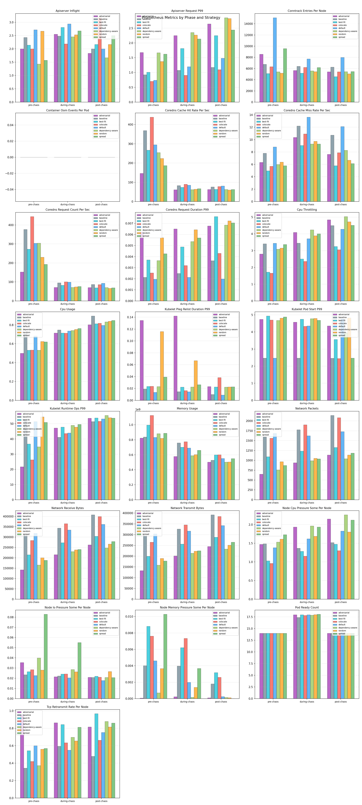
This appendix documents how each metric in this report is calculated. All formulas reference the actual implementation in the ChaosProbe source code.
Every continuous prober classifies each sample into one of three phases based on chaos lifecycle timestamps:
mark_chaos_start() is calledmark_chaos_end() is calledIf the chaos engine does not report an end time, a safety cap prevents the during-chaos window from growing indefinitely:
This dynamic buffer scales with experiment duration while remaining bounded, giving enough time to capture immediate post-fault recovery behaviour in the during-chaos window.
The resilience score (0–100) is derived from LitmusChaos probe verdicts.
Each experiment has a probeSuccessPercentage (the fraction of
probes that passed). The final score is a weighted average across all experiments:
By default all experiments have equal weight (w=1). The report note describes how continuous metrics (recovery speed, latency, error rate, throughput) contribute to differentiation beyond probe verdicts alone.
Measured via the Kubernetes Watch API by observing real-time pod lifecycle events. A recovery cycle is defined as:
Each cycle records three durations:
deletionToScheduled_ms — time from deletion event to the replacement pod being scheduledscheduledToReady_ms — time from scheduling to the pod reaching Ready statustotalRecovery_ms — end-to-end: deletion to ReadySummary statistics across all cycles in a run:
P95 is computed as sorted_values[floor(n × 0.95)].
Latency is measured by executing HTTP requests from inside the cluster via
kubectl exec, using python3 (preferred) or wget as a fallback.
Each target pod is probed independently as a separate vantage point.
Per-route summary (computed over successful samples only):
Error rate:
Cross-pod standard deviation (placement signal):
A higher cross-pod stddev indicates that different pods experienced different latencies, which is a signal of placement-dependent behaviour (e.g., one pod shares a node with the fault target while another does not).
Worst vantage point:
Node-level CPU and memory metrics are fetched from the Kubernetes Metrics API
(metrics.k8s.io/v1beta1) every sampling interval.
Used-nodes-only filtering: only nodes hosting at least one running pod in the target namespace are included. This prevents idle nodes from diluting placement-specific signals. For example, colocate concentrates all pods on a single node — averaging CPU across 3 cluster nodes would show ~30% instead of the actual ~80% on that node.
Per-tick aggregate (across used nodes):
Phase summary:
The same pattern applies to memory metrics. Standard deviation across ticks indicates variability; peak shows the worst-case node pressure observed.
Two I/O subsystems are probed independently:
Redis throughput (via redis-benchmark):
redis-benchmark -q)-q output (else 1000 / ops_per_sec)
Default concurrency saturates the server so node-level CPU contention shows up as a throughput drop. Operations measured: SET and GET.
Disk throughput (via dd):
Sequential I/O with configurable block size. Operations measured: write and read.
Cross-node aggregation (placement signal):
Higher cross-node stddev indicates uneven I/O performance across nodes, which correlates with placement-induced resource contention.
Three hypotheses are evaluated programmatically against the collected data:
Noise margin (used to determine if score differences are meaningful):
Where σ is the standard deviation of resilience scores across iterations. A minimum of 5 points prevents false signals from low-variance runs.
H1 — Colocate has lowest resilience:
H2 — Spread has highest resilience:
H3 — Baseline achieves 100%: